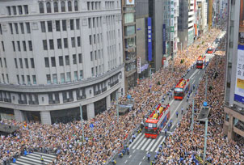

The history of the city of Tokyo stretches back some 400 years. Originally named Edo, the city started to flourish after Tokugawa Ieyasu established the Tokugawa Shogunate here in 1603. As the center of politics and culture in Japan, Edo grew into a huge city with a population of over a million by the mid-eighteenth century. Throughout this time, the Emperor resided in Kyoto, which was the formal capital of the nation. The Edo Period lasted for nearly 260 years until the Meiji Restoration in 1868, when the Tokugawa Shogunate ended and imperial rule was restored. The Emperor moved to Edo, which was renamed Tokyo. Thus, Tokyo became the capital of Japan. During the Meiji era (1868-1912), Japan began its avid assimilation of Western civilization. Buildings made of stone and bricks were built on the sites of the mansions of feudal lords, and the major roads were paved with round stones. In 1869 Japan’s first telecommunications line was opened between Tokyo and Yokohama, and the first steam locomotive started running in 1872 from Shimbashi to Yokohama. Western hairstyles replaced the traditional topknot worn by men, and bowler hats, high collars, and bustled skirts were the height of fashion. In 1882 Japan’s first zoological gardens were opened in Ueno. In 1885 the cabinet system of government was adopted and Ito Hirobumi became Japan’s first prime minister. With the promulgation of the Constitution of the Empire of Japan in 1889 Japan established the political system of a modern state. During the Taisho era (1912-1926), the number of people working in cities increased, and a growing proportion of citizens began to lead consumer lifestyles. Educational standards improved, and the number of girls going on to study at higher schools increased. Performing arts such as theater and opera thrived. In September 1923 Tokyo was devastated by the Great Kanto Earthquake. The fires caused by the earthquake burned the city center to the ground. Over 140,000 people were reported dead or missing, and 300,000 houses were destroyed. After the earthquake a city reconstruction plan was formulated, but because the projected costs exceeded the national budget only a small part of it was realized. Beginning shortly after the Great Kanto Earthquake, the Showa era (1926-1989) started in a mood of gloom. Even so, Japan’s first subway line was opened between Asakusa and Ueno in 1927, and in 1928 the 16th general elections for the House of Representatives of the Diet were held for the first time following the enactment of universal male suffrage. In 1931 Tokyo Airport was completed at Haneda, and in 1941 the Port of Tokyo was opened. By 1935 the resident population of Tokyo had grown to 6.36 million, comparable to the populations of New York and London. However, the Pacific War, which broke out in 1941, had a great impact on Tokyo. The dual administrative system of Tokyo-fu (prefecture) and Tokyo-shi (city) was abolished for war-time efficiency, and the prefecture and city were merged to form the Metropolis of Tokyo in 1943. The metropolitan administrative system was thus established and a governor was appointed. In the final phase of the war, Tokyo was bombed 102 times. The heaviest air raid was on March 10, 1945, in which there was great loss of life and material damage. The war came to an end on September 2, 1945, when the Japanese government and military representatives signed the Instrument of Surrender. Much of Tokyo had been laid waste by the bombings and by October 1945 the population had fallen to 3.49 million, half its level in 1940. In May 1947 the new Constitution of Japan and the Local Autonomy Law took effect, and Seiichiro Yasui was elected the first Governor of Tokyo by popular vote under the new system. In August of that year, the present23 special-wardsystem began in Tokyo Metropolis. The 1950s were a time of gradual recovery for the nation. Television broadcasting began in 1953, and Japan joined the United Nations in 1956. Economic recovery was aided in particular by the special procurement boom arising from the outbreak of the Korean War in 1950. This led to Japan’s entry into a period of rapid economic growth in the 1960s. Due to technological innovations and the introduction of new industries and technologies, this period saw the beginning of mass production of synthetic fibers and household electric appliances such as televisions, refrigerators, and washing machines. As a result, the everyday lives of the residents of Tokyo underwent considerable transformation. In 1962 the population of Tokyo broke the 10 million mark. In 1964 the Olympic Games were held in Tokyo, the Shinkansen (“Bullet Train”) line began operations, and the Metropolitan Expressway was opened, forming the foundation for Tokyo’s current prosperity. Entering the 1970s, the strain of rapid economic growth became apparent as the country was beset by environmental issues such as pollution of the air and rivers, as well as high levels of noise. The Oil Crisis of 1973 brought the many years of rapid economic growth to a halt. In the 1980s, Tokyo took large steps in economic growth as a result of its increasingly global economic activity and the emergence of the information society. Tokyo became one of the world’s most active major cities, boasting attractions such as cutting-edge technology, information, culture, and fashion, as well as a high level of public safety. From 1986 onwards, land and stock prices spiraled upwards, a phenomenon known as the “bubble economy.” Japan enjoyed tremendous growth under the bubble economy, but with the burst of the bubble at the beginning of the 1990s, sinking tax revenues caused by the protracted economic slump led to a critical state in metropolitan finances. Tokyo was, however, able to overcome this financial crisis through two successive fiscal reconstruction programs. The population also started returning to Tokyo, and in 1997, in-migration exceeded out-migration for the first time in 12 years. In 2001, Tokyo’s population reached 12 million, and surpassed 13 million in 2010. In March 2011 the Great East Japan Earthquake struck the Tohoku region, and Tokyo was also seriously affected. Using the experiences gained from this disaster, Tokyo is devoting efforts to further strengthening its crisis management system. In September 2013, Tokyo was selected to host its second Olympic and Paralympic Games in 2020. To make the 2020 Games the best ever and leave valuable legacies for the future, the Tokyo Metropolitan Government is working to advance both tangible and intangible initiatives including infrastructure upgrades, measures for the environment, and the promotion of culture. Tokyo’s population is projected to start declining once it reaches its peak in 2020. Also taking into consideration changes to the structure of society such as the graying of the population, the Tokyo Metropolitan Government is pushing toward its goal of becoming the world’s best city where a balance between economic affluence and the quality of life is achieved and anyone can fully enjoy life.
